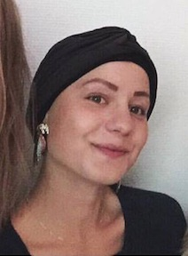

Oure Idrætsefterskole
STX
Johan Borups Højskole
Grundlæggende Animation
Tema 03.
02.01.02 Karakterdesign og skitser 02.01.03 Rentegnede karakterer og scenografi 02.03.01 Lydsiden
Egen Animation
I opgaven i egen animation, var kravene minimum to animationer, scenen skulle have forgrund, mellemgrund og baggrund og skulle foregå udenfor.
Jeg valgte at lave en animation inspireret af Alice i eventyr land, så min hovedkarakter er en pige og den onde karakter er en form for heks, men uden fast form.
Scenen er en fortryllet skov, hvor det er lige ved at være skumring.

Sex og Samfund Animation.
Vi fik som gruppe stillet opgaven fra Sex og samfund, om at lave et spil, det skal få unge mellem 13-15 år,
til at ringe til sex og samfund, hvis de oplever deling af billeder uden samtykke.
Derfor valgte vi i gruppen, at lave et spil, hvorpå man kan vælge som bruger endten af dele et nøgenbillede eller ikke at dele billedet, af vores hovedkarekter.
Spillet ender med, at opfordre unge, til at ringe til Sex og samfund, hvis i skulle stå eller opleve samme situation.

I Animation er der brugt:
- HTML
- CSS
- Indesign
- Photoshop
- Illustrator
- Primer pro
- Java script
- Irig recorder
- De 12...
- Bert-Test
- Tænk-højt test